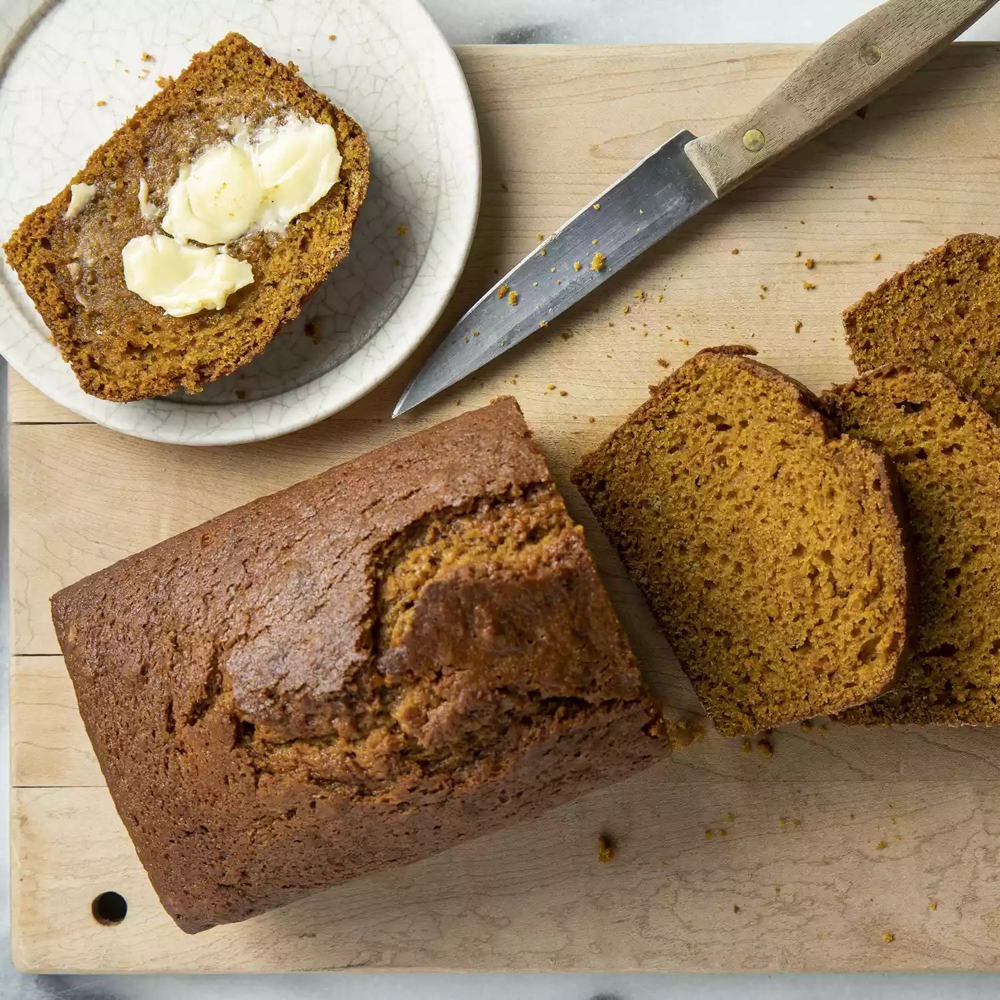

Downeast Maine Pumpkin Bread

Description
This pumpkin bread is a great old Maine recipe, moist and spicy. The bread actually tastes even better the day after it is baked. It's easy to make and perfect for holiday gift giving!
Ingredients
- 1 (15 ounce) can pumpkin puree
- 4 eggs
- 1 cup vegetable oil
- 2/3 cup water
- 3 cups white sugar
- 3 1/2 cups all-purpose flour
- 2 teaspoons baking soda
- 1 1/2 teaspoons salt
- 1 teaspoon ground cinnamon
- 1 teaspoon ground nutmeg
- 1/2 teaspoon ground cloves
- 1/4 teaspoon ground ginger
Steps
- Preheat oven to 350 degrees F (175 degrees C). Grease and flour two 9x5 inch loaf pans.
- In a large bowl, mix together pumpkin puree, eggs, oil, water and sugar until well blended. In a separate bowl, whisk together the flour, baking soda, salt, cinnamon, nutmeg, cloves and ginger. Stir the dry ingredients into the pumpkin mixture until just blended. Pour into the prepared pans.
- Bake for about 50 minutes in the preheated oven. Loaves are done when toothpick inserted in center comes out clean.
Back to homepage